Overview
In this project, we used ray tracing and cameras to determine where these created rays intersect with various objects in the images. To accomplish this, we worked through ray generation and implemented numerous intersection algorithms. To speed up the process, we used Bounding Volume Hierarchy (BVH) acceleration to create bounding boxes. Finally, we implemented lighting functions that use direct/indirect lighting, global illumination, and sped up our process even more with adaptive sampling.
Part I: Ray Generation and Scene Generation
In the rendering pipeline, ray generation and primitive intersection both play very important roles. For ray generation, the end goal is to transform a two-dimensional coordinate in image space to a three-dimensional coordinate in camera space. The z-coordinate in camera space is set to -1 to maintain a consistent depth as this direction represents the viewing direction. To transform the x-coordinate, we take the horizontal field of view value in radians, divide it by 2, and take the negative tangent. As seen in the provided Camera::configure() function, we also need to multiply this by 2. The rationale behind this is that our field of view values are represented as half angles. We follow the same steps for the vertical field of view to get a three-dimensional vector. To convert, we apply the camera-to-world rotation matrix and normalize the resulting value for consistency to finally get our ray direction. To sum up the resulting ray, we have found the normalized ray direction and also note the given camera position. We also set lower and upper bounds for the ray to maintain bounds and set intersection values later. Now, with ray generation complete, we must apply this method in a practical setting. We can use this to estimate the integral of radiance over a pixel using Monte Carlo. Using the provided function Pathtracer::get_sample(), we get a two-dimensional vector to offset from our origin. We normalize these coordinates by the width and height of the image and pass it into the previous function we created. Then, we take this result, get the estimated radiance and add it to a running total. Finally, when we’ve completed sampling, we divide the running total by the number of samples and it to our sample buffer.
Calculating primitive intersection parts of the rendering pipeline is also important because it determines what the camera captures, including important features such as shadows and visibility. In this section, we implement two methods regarding intersections with triangles and spheres. One of them simply checks whether or not an intersection exists, the other does that and also returns information regarding any such intersection. The triangle intersection algorithm implements the Moller Trumbore Algorithm. This algorithm relies on finding the barycentric coordinates to determine where the ray intersects the triangle. It also returns a value, t, which determines the magnitude in the ray where the intersection occurs. We check to see if the value t is greater than or equal to 0 and within bounds of the min and max values of the ray. We also check if the barycentric coordinates are between 0 and 1, inclusive. If these are all true then, there is an intersection and we can calculate the normal there by multiplying the barycentric coordinates and the mesh normals of the triangle.
 CBEmpty
CBEmpty
|
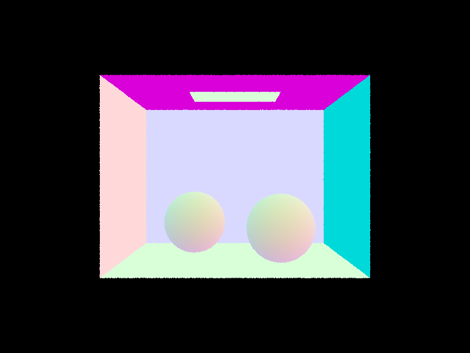
CBSpheres
|
Part II: Bounding Volume Hiearchy
The purpose of the BVH construction algorithm is to reorganize the geometry in question through bounding boxes and reduce the number of intersections to check for. First, given a list of primitives, we construct a bounding box and initialize a node containing this final result. Depending on how many primitives we traversed, we compare it to the inputted maximum leaf size to determine whether or not the node we created is a leaf node. If so, we modify the node’s start and end values to what we just looped over. The importance of this step is to check if the number of primitives is below a certain threshold where we can just perform intersection checks regularly. Then, if our number of primitives exceeds this value, we have an algorithm that will split spaces within the image to optimize the number of intersection checks required. This is super important for large, complex geometries. First, we want to find which axis to split on, or the one that gives us the most benefit. To do this I retrieved the extent of the bounding box previously calculated. From the extent vector, I selected the axis which had the greatest value. For the splitting point, I calculated the average of all the centroids within the bounding box I created and defined two new primitive iterators, which represent the left and right subsection I will recursively iterate. To determine which value gets put inside which iterator, I check whether each value of the centroid’s axis to split on is less than the average centroid’s axis to split. If so, it goes in the left vector, or else it goes into the right vector. I chose the mean because I could calculate it in the same loop as calculating the bounding box, which saves a lot of time. I valued time a lot in this case because the larger the geometries get, the more amplified inefficient algorithms show. Furthermore, the spec warned that there are some cases in which all primitives might lie on one side of the split point, there might be a segfault. In most cases, choosing the mean as a heuristic is safe, but not in all cases. To compensate for this, I check if any of the primitive vectors are empty, and, if so, based on it being left or right, I pop the front or back of the vector that’s not empty and push it onto the one that is empty. As a result, before we begin the recursive step, the size of each vector is at least one and will not lead to a segfault. Then, I create two new iterators that help assign the order of the left and right elements that’ll be used in the recursive step. When calling this method on the left side, we loop from the input start to our new iterator and, for the right side, we loop from the new iterator to the input end.
Testing image rendering on images with and without BVH acceleration resulted in staggering results. First, I tested the maxplanck.dae image inside the meshedit folder. Without BVH acceleration, it took my computer a long time to run and produced an average speed of 0.0011 million rays per second. With BVH acceleration, it produced an average speed of 0.1158 million rays per second. The difference between this is 100x. This is a fairly complex geometry of a face-like sculpture. In a more advanced test case of a sculpture, I tested the CBlucy.dae image inside the sky folder. Here, without BVH acceleration, it took 0.0004 million rays per second, and with BVH acceleration, it took 0.2158 million rays per second. The difference between these is more than 700x. We can see that as geometries get more complex, the greater the time impact BVH accelerations have on rendering the image.
|
maxplanck.dae with BVH acceleration
|
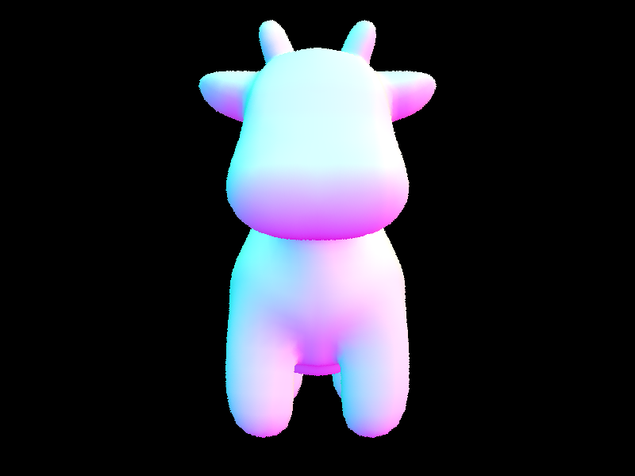
cow.dae with BVH acceleration
|
Part III: Direct Illumination
In direct lighting with uniform hemisphere sampling, we want to loop through the total number of samples to be taken, which is the product of the number of samples per area light source and the number of lights in the scene. Using a samplingHemisphere already created, we call a sample on that to get a random sample vector in the hemisphere. From that, we create a ray that has an origin of a hit point calculated in the given code and direction of the ray, calculated by transforming our random vector from object space to world space. We also set the ray’s beginning to EPS_F for numerical precision and prevent the ray from intersecting the surface it started from. Finally, we check for intersections using BVH acceleration and the ray we just created. If there is an intersection, we add to the running radiance total by multiplying the intersection’s emission, the sampled bsdf value of the passed in intersection, and the cosine of wi obtained from the previous bsdf sampling, and finally dividing by the pdf. This process uses a Monte Carlo estimator. After looping through the required number of samples, we normalize the total radiance and return. In direct lighting by importance sampling, we loop through each light within the scene and determine whether the light is a point source or not via SceneLight::is_delta_light(). If it is from a point source, then sample that light which returns a unit vector giving the sampled direction between the hit point and light source, the distance between the hit point in the unit vector’s direction, and probability density function in the unit vector’s direction. Just like in hemisphere sampling, we precalculated the hit point in the given code. With this information, we create a new ray with origin hit point and direction of the unit vector wi from the sample. We set its beginning to EPS_F for the same reason in the previous function and set its end to the difference of the distance and EPS_F to avoid intersecting the light with itself. If the light is behind the surface, then the cos of the wi unit vector is less than 0 and we don’t modify our output radiance. Else if it is not behind the surface and using the BVH acceleration the ray does not intersect, we use the same function used in the Monte Carlo estimator to update our radiance and move on to the next light. In the case where the light is not from a point source, we follow the same steps, but use the Monte Carlo estimator as a whole for number samples per area light source and add the normalized running total to the final radiance. Once we’ve looped over all the lights, we return the final radiance we’ve been adding to all along.
When we look above at our below renders, the render that uses lighting sampling produces a sharper, less grainy image compared to direct hemisphere sampling. First, we can examine the faces of the cube. In the direct hemisphere sampling result, we can see that the surfaces are very grainy and do not appear smooth in color. Second, the actual bunny and it’s shadow is quite grainy. These results can likely be explained by the fact that the direct lighting method specifically samples the light source, whereas the direct hemisphere sampler samples within the hemisphere, which has a lower probability of capturing the light distributions accurately.
|
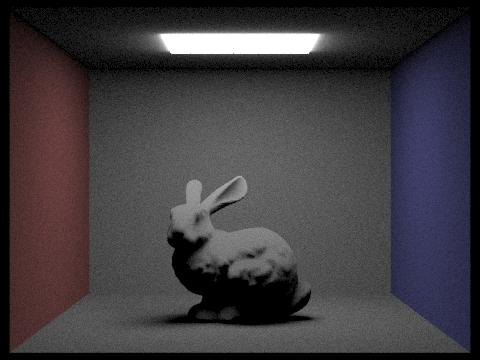
Direct Hemisphere Lighting with CBbunny.dae
|
Direct Lighting with CBbunny.dae
|
|
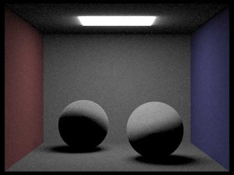
Direct Hemisphere Lighting with CBspheres_lambertian.dae
|
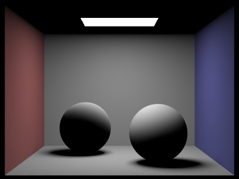
Direct Lighting with CBspheres_lambertian.dae
|
|
light rays=1 sample rate=1
|
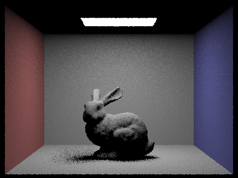
light rays=4 sample rate=1
|
light rays=16 sample rate=1
|
light rays=64 sample rate=1
|
Part IV: Global Illumination
The indirect lighting function starts by taking in the result of one_bounce_radiance to which the radiance of future bounces will be added. If isAccumBounces is set to true, this means that we will calculate the accumulated light up until the max ray depth. We sample from the bsdf at the inputted point of intersection and save the resulting wi of incident light direction and the pdf of the sampled incident light direction. We create a new ray with origin hit point and incident light direction in world space, which is calculated by multiplying wi and the matrix transforming it from object to world space. We set this new ray’s depth to 1 less than the input ray and set it’s minimum bound to EPS_F to prevent the ray from intersecting the surface it came from. We check to see if the cosine of wi is positive and whether or not there is an intersection using BVH acceleration with the new ray. If so, we use the formula from lecture and recursively call at_least_one_bounce_radiance with the new ray, new intersection, multiply it with the bsdf sample and the cosine of wi and divide it by the pdf and probability from Russian roulette. We take this result and add it to the running radiance total. Finally, when all our recursive calls our complete, we return the total radiance.
|
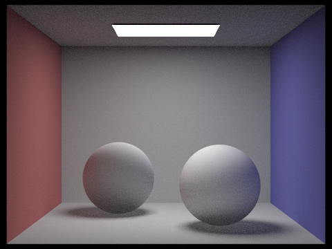
CBspheres_lambertian with m=2 and s=1024
|
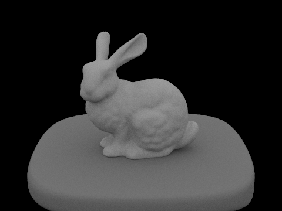
Bunny with m=3 and s=1024
|
With direct illumination, we can see that the ceiling is dark except for the light, and there is high contrast in the spheres and each of the walls. Overall, this image doesn’t “blend” in together but there are very strict, sharp properties. WIth indirect illumination, the ceiling is light and the light is dark, the inverse of the direct example. All the colors in the scene blend together very seamlessly and the colors bounce everywhere. Both renders are with 1024 samples per pixel.
|
Direct illumination
|
Indirect illumination
|
Below is the Russian Roulette sampling of CBbunny.dae with s=1024 and varying max ray depth.
Below are all the rendered scenes with varying sample-per-pixel rates on CBbunny.dae. All of them use 4 light rays. As we increase the sample-per-pixel rates, we can see the image becomes less grainy as seen in various places, such as the bunny, the bunny’s shadow, and edges of the walls.
|
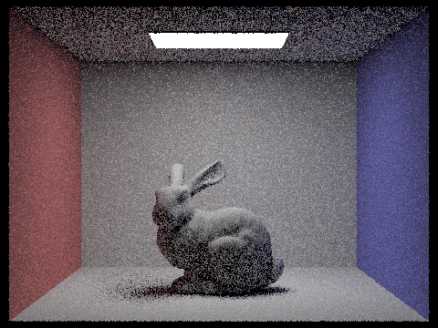
s=1
|
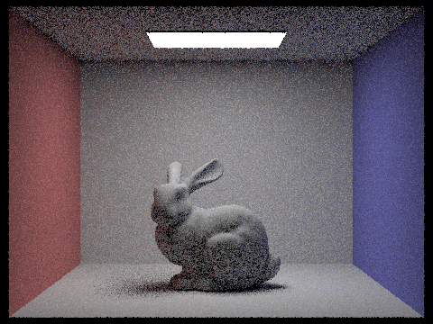
s=2
|
|
s=4
|
s=8
|
|
s=16
|
s=32
|
s=64
|
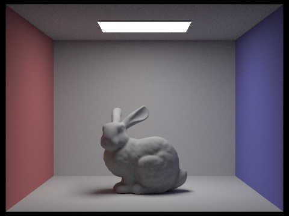
s=1024
|
Part V: Adaptive Sampling
To implement adaptive sampling, we concentrate samples in more difficult parts of the image. What we want to do is loop over the total samples to evaluate and keep track of which batch number we’re on and the s1 and s2 values used in s1 and s2. Everytime we loop, we sample from the grid sampler and add the origin to it so we can generate a ray from the camera after normalizing by the dimensions of the sample buffer. We set this ray’s depth to max_ray_depth because of Task 4 and, with this sample ray, we can calculate est_radiance_global_illumination to add to our running estimate. Finally, we update the s1 and s2 values based on the returned radiance vector result’s illumination. With all these updated values, we can now determine whether or not we want to keep evaluating. If the current batch we’re on is a multiple of the given samplesPerBatch, we calculate I. To calculate I, we calculate variance, which is 1(n-1) * (s2 - s1^2/n) and multiply it by 1.96 while dividing by the square root of the total number of items sampled so far. Finally, we calculate a bound which represents whether or not the pixel has converged. To get this bound, we multiply the mean of s1, which can be obtained by dividing s1 by the number of items sampled so far and multiplying it by the given maxTolerance. If I is less than or equal to bound, it’s safe to assume we’ve sampled enough and we stop the loop. Finally, we average our estimate vector, update the pixel in the sample buffer and update the count in the respective position in the sample count buffer.
All images below have 2048 samples per pixel, 1 sample per light, 5 max ray depth.
|
Bunny with adaptive sampling .
|
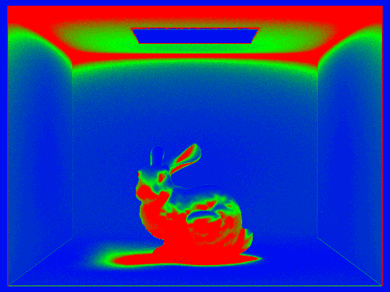
Bunny rate image with adaptive sampling
|
|
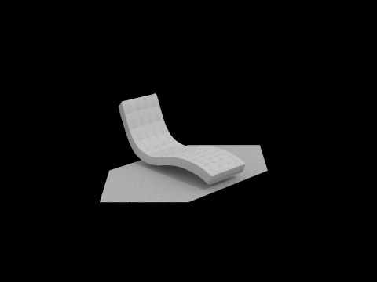
Bench with adaptive sampling
|
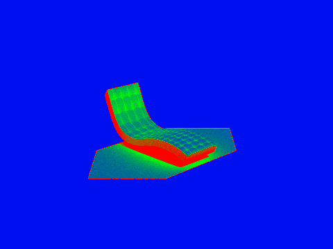
Bench rate image with adaptive sampling
|